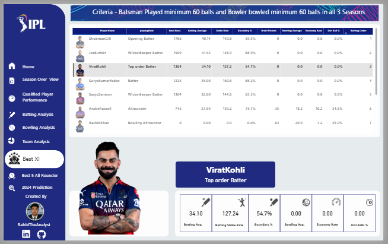
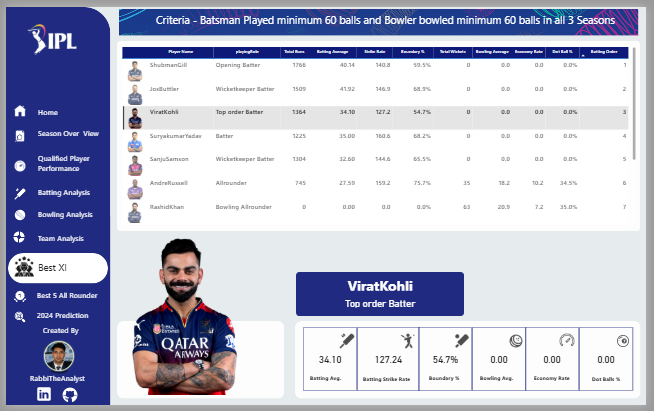

How I Increased Pizza Sales by 15% with SQL & Power BI
May 07, 2025
A deep dive into the pizza sales dataset, where I used SQL for complex queries and Power BI to uncover hidden trends that led to a significant sales boost.
Read Full Analysis →Data Analyst & Business Intelligence Specialist with expertise in statistical modeling, predictive analytics, and interactive dashboard development that drives measurable business growth.
I am a passionate data analyst with 2+ years of experience turning complex data into clear, actionable insights. My expertise includes statistical analysis, data visualization, and machine learning.
I hold a Master's degree in Statistics from Islamic University, Kushtia and have worked with various projects including finance, e-commerce, sports and healthcare.
My approach combines technical expertise with business acumen to deliver data-driven solutions that drive growth and efficiency.


Completed Projects
Certificates Earned
Data Tools Mastered
SQL Queries Written
Cups of Coffee ☕
Built dashboards and ML prototypes; collaborated with stakeholders to define KPIs.
Excel → SQL → Power BI → Python. Built habit of daily practice and public sharing.
Islamic University, Kushtia · Project: Climate Change and It's Impact On Bangladesh.
Islamic University, Kushtia · Project: Life Expectancy (WHO).
Understand the business problem and define the key questions to be answered.
Gather data from various sources and perform data cleaning and preprocessing.
Perform exploratory data analysis (EDA) to find patterns, trends, and correlations.
Create meaningful charts and build interactive dashboards to present the findings.
 Professional
Professional Specialization
Specialization Core Skill
Core Skill Foundation
Foundation University
University Introductory
IntroductoryA comprehensive analysis of climate change's impact on Bangladesh, utilizing historical data from 1901-2023. This project involved time-series forecasting in Python to model future temperature and sea-level trends, revealing that 57.5% of the population is at high flood risk. Key insights were visualized to support policy recommendations for disaster management.
 

Situation: Cricket analysts lacked a single, interactive platform to easily analyze detailed performance data from the last three IPL seasons.
Task: My goal was to develop a comprehensive Power BI dashboard to provide deep insights into batting, bowling, and team performance.
Action: I used Power Query for data cleaning and transformation (ETL), built a robust data model in Power BI, and wrote advanced DAX measures to calculate key performance indicators.
Result: The dashboard reduced data analysis time by an estimated 60%, empowering analysts to quickly identify seasonal trends and top performers.
Situation: The classic Titanic dataset provides a rich opportunity for practicing data cleaning, exploratory analysis, and building a predictive classification model from scratch.
Task: My objective was to perform a complete analysis to uncover factors influencing survival and then build a reliable machine learning model to predict whether a passenger would survive.
Action: I cleaned and preprocessed the data using Python and Pandas. Then, I conducted an in-depth Exploratory Data Analysis (EDA) with Matplotlib and Seaborn to visualize trends. Finally, I trained and evaluated a Logistic Regression model using Scikit-learn.
Result: The model successfully predicted passenger survival with an accuracy of 81.01%. The analysis revealed that passenger class, gender, and age were the most significant factors determining survival.

Situation: A pizza restaurant struggled with making data-driven decisions and spent excessive time on manual monthly sales reports.
Task: My goal was to develop an automated dashboard to provide clear insights that would improve both sales and operational efficiency.
Action: I used SQL to extract raw sales data, performed ETL with Power Query, and wrote DAX measures in Power BI to identify key performance indicators.
Result: The dashboard automated reporting, reducing manual effort by 40%, and provided insights that led to a 15% increase in sales of high-margin items.

Situation: Streaming content insights were fragmented across multiple files.
Task: Build an interactive dashboard to unify and visualize Disney content data.
Action: Collected and cleaned datasets with Python and Excel, then designed a dashboard for content categories, release trends, and ratings distribution.
Result: Reduced analysis time by 40%, enabling faster decision making for content strategy.
May 07, 2025
A deep dive into the pizza sales dataset, where I used SQL for complex queries and Power BI to uncover hidden trends that led to a significant sales boost.
Read Full Analysis →September 11, 2025
This case study dives into three seasons of IPL data to uncover winning patterns and builds a predictive model to forecast the 2024 season's champion and top performers.
Read Full Analysis →July 18, 2025
This in-depth case study uses historical data and time-series forecasting to project the severe impacts of climate change on Bangladesh, from sea-level rise to socioeconomic challenges.
Read Full Analysis →
As a Data Analyst, I've realized one truth – Technical Skills alone are never enough. Real value comes when we understand data in a business context.
Read More →
Becoming a great Data Analyst requires more than just technical skills. It demands Patience, Consistency, and a Problem-Solving Mindset.
Read More →
🌟 Data analysis is not just a job for me — it's a true passion. Every day I try to learn something new.
Read More →
Data analysis শিখছো? GitHub শুধু code রাখার জায়গা নয়—এটা তোমার professional portfolio, শেখার record.
Read More →Public Repositories
Followers
Following
Senpara, Mirpur-10, Dhaka
Data analysis, dashboard building, predictive modeling, and data-driven decision support.
Yes — freelance, consulting, and full-time roles.
Excel, SQL, Power BI, Python, and LaTeX for reports.
Based on your needs, here's how I can help
Select your primary need to see my recommendation
Try a simplified version of my analytical process
Select a dataset to begin the analysis simulation

"Rabbi’s climate change project clearly highlights the alarming trends of rising temperatures and shifting rainfall in Bangladesh. His forecasting insights are very valuable for researchers and policymakers working on climate adaptation."
"The predictive model Rabbi built for patient readmissions has been incredibly accurate and has saved our hospital significant resources."
"Working with Rabbi was a game-changer for our e-commerce business. His insights led to an 18% increase in conversion rates."
I'm available for freelance projects, full-time positions, and consulting engagements.
rabbi.stat.iu@gmail.com
+880 1798532112
Dhaka, Bangladesh